UDN
Search public documentation:
StaticMeshesTutorialJP
English Translation
한국어
Interested in the Unreal Engine?
Visit the Unreal Technology site.
Looking for jobs and company info?
Check out the Epic games site.
Questions about support via UDN?
Contact the UDN Staff
한국어
Interested in the Unreal Engine?
Visit the Unreal Technology site.
Looking for jobs and company info?
Check out the Epic games site.
Questions about support via UDN?
Contact the UDN Staff
StaticMeshes（静的メッシュ)のチュートリアル
本書の概要: 静的メッシュ、静的メッシュ ブラウザ、静的メッシュの/への変換、およびプロパティの使用についてのガイドです。初心者や中級レベル向きです。 本書の変更記録: 衝突情報を更新するために、Chris Linder(DemiurgeStudios) により最後に更新。原著者は、Lode Vandevenne (UdnStaff?)。.静的メッシュ/ハードウェア ブラシとは何か?
StaticMesh （静的メッシュ、以前は「ハードウェアブラシ」と呼ばれていました）は、ハードウェアのグラフィックスカードのによって描かれた一組のポリゴンのことです。これは通常のブラシやアニメーテッド（動く）メッシュよりも、スピードが速く、より多くのポリゴンを取り扱うことができ、BSP ホールに対して脆弱ではなく、よく見えます。StaticMeshの名前の由来は、変更されることのないメッシュとして描かれるためで、ビデオ メモリにキャッシュで格納することができます。したがって、これまで以上に優れた性能が得られます。 どのようなブラシや動くメッシュでもStaticMeshに変換できますし、どのようなStaticMeshでもブラシに変換できます。また、*.ase ファイルからStaticMeshをインポートすることもできます。StaticMeshは、テクスチャ、サウンド、音楽などが格納されるのと同じように、パッケージ、*.usx ファイルに格納されます。 標準ブラシは、マップのきわめて基本的なレイアウトのために使用されます。ライティングを良くするために不透明ワールドから何かを減算したり、または、ミラー、偽の背景、パンするサーフェスなどの特殊なサーフェスを使用したいときにのみ使用するようにしてください。他のすべてのブラシは、StaticMeshに変換する必要があります。特に、多くのポリゴンを持つ場合はそうです。 例えば、マップ メサ は、ほとんどStaticMeshだけから構成されています。スクリーンショット上には、標準ブラシによる目に見えるポリゴンが 8 つしかないことに注目してください。
StaticMesh ブラウザ
StaticMesh ブラウザを立ち上げるには、ツールバー上部にある[Static Mesh Browser]のボタンを押します。 [Static Meshes]ウィンドウが現れます。
[Static Meshes]ウィンドウが現れます。
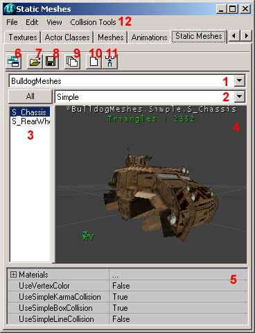
このウィンドウには、パッケージに含まれるすべてのStaticMeshが表示されます。[Sound Browser](サウンド ブラウザ)や[Texture Browser](テクスチャ ブラウザ)などと同様に機能します。このことは、すべてのStaticMeshがこのブラウザのスキンを使用し、もしブラウザのスキンが変更されると、変更されたスキンを使用しているすべてのStaticMeshが同様に変更されることを意味します。次に、スクリーンショット上の番号を付けたボタンとパーツの意味を示します。 1. このリストでは、開いたパッケージの内の一つを選択できます。 2. ここでは、何かグループがある場合、選択したパッケージ内のグループを選択できます。[All] （すべて） ボタンを押すと、すべてのグループが同時に表示されます。 3. このリストでは、選択されたパッケージやグループ内のすべてのStaticMeshが表示されます。 4. これは、Static Meshを見ることができる ウィンドウです。エディタの3D ビューでカメラを動かすのと同じように、このウィンドウのカメラを動かすことができます。 5. このフィールドでは、StaticMeshの各マテリアル毎にテクスチャを取り替えることと衝突をコントロールすることができます。[Vertex Colors] （頂点色）、[Simple Karma Collision] （単純なカルマ衝突）、[Simple Box Collision]（単純なボックス衝突）および[Simple Line Collision]（単純なライン衝突）を Ｕｓｅ（使用）するかどうかのオンオフを切り替えることもできます。 6. [Toggle Dock Status] （トグル ドック ステータス）ボタンを押すと、Static Meshesウィンドウがドッキングされるか、または、メイン ブラウザ ウィンドウから解放されます。 7. [Open Package] （パッケージを開ける）ボタンによって、ハードドディスクにあるStaticMeshを開けることができます。StaticMesh パッケージのファイルタイプは *.usx です。 8. [Save Package] （パッケージを保存する）ボタンによって、ハードディスク上の選択されたパッケージをStaticMesh ディレクトリ内に保存することができます。新しいパッケージをつくったり、パッケージを修正したりして、マップでそのパッケージの要素を何か使用した場合、パッケージを保存することを決して忘れないでください。そうしないと、マップは実作動しなくなります。 9. [Load Entire Package] （すべてのパッケージをロードする）ボタンを使用して、ハードディスクにある選択されたパッケージからすべてのStaticMeshをロードします。一部しかStaticMeshがロードされない場合は、開けたマップがいくつかのStaticMeshのみを使用しているからです。 10. [Create Static Mesh From Selection] （選択からStaticMeshを作成する）ボタンを押すと、すべての選択されたブラシ、アクタおよびStaticMeshが、一つの新しいStaticMeshに変換されます。詳細については後述します。 11. [Insert Static Mesh into Level] （StaticMeshをレベルに挿入する）ボタンを押すと、選択されたStaticMeshは、マップに追加され、カメラの位置でスナップされます。 12. メニュー バーは、各ブラウザに特定です。以下に、各メニューで見られるアクションがすべて記されています。- File（ファイル） - ここから、StaticMeshである .usx ファイルを [Open] （開け）したり、[Save] （保存）したり、または、.ase ファイルから Static Meshを [Import] （インポート）できます。詳細については後述します。
- Edit（編集 ） - [Delete] （削除）、[Rename] （名称変更）、[Load Entire Package] （すべてのパッケージをロードする）が実行できます。また、パッケージをレベルに追加したり、選択からパッケージを作成したりできます。また、
- View（表示） - このメニューにより、プレビュー （#4）用に様々な異なるビュー モードを選ぶことができます。
- Show Collision（衝突を表示） - このメニューでは、衝突の外殻の明るいピンク色のワイヤフレームが表示されます。
- Karma Primitives（カルマ プリミティブ） - カルマによって使用される衝突境界の表現を表示します。カルマの衝突境界では、球、円柱、ボックス、凸面体（エッジ面としてではなく、頂点としてのみ格納されます）がサポートされます。カルマの衝突境界の色が異なることは、衝突の外殻を構成するプリミティブが異なることを示しています（このプリミティブは少なければ少ないほど良いのです。理想的には一つです）。衝突プリミティブの総数は、プレビュー ウィンドウ（#4）でも表示されます。
- Karma Mass Properties（カルマ質量プロパティ） - 異常に大きい頂点として示されるオブジェクトの質量の中心の外に、オブジェクトの質量を定義するボックスとして視覚的な表現が表示されます。
- Collision Tools（衝突ツール） - これらのツールを使用して、StaticMesh用に異なる複雑さで衝突の外殻を生成することができます。
StaticMeshをインポートする
.ase ファイルをStaticMesh ブラウザにインポートすることができます。[File] （ファイル）メニューを開けて、[Import... ] （...をインポートする）を選択し、.ase ファイルを検索します。[Import Static Mesh] （StaticMesh インポート）ウィンドウが現れます。 [Package] （パッケージ）には、新しいStaticMeshを格納したいパッケージの名前を入力します。 MyLevel（マイレベル）を使用する場合、StaticMeshは、作成中のマップのファイル（ *.unr ファイル）に格納されます。その他のパッケージ名を使用する場合は、エディタを閉じたり、マップをテストする前に、必ずパッケージを保存してください。
[Group] （グループ）には、StaticMeshを入れたいグループの名前を入力します。何も入力しないと、どのグループにも入りません。
[Name] （名前）には、StaticMeshをパッケージに入れるための名前を入力します。
複数の *.ase ファイルをブラウザのウィンドウで選択した場合、[OK All] （すべてOK）を使用して、パッケージにあるすべてのファイルと選択したグループを自動的にインポートできます。ファイル名は、元のファイル名と同じになります。
MyLevel以外のパッケージを使用する場合は、パッケージを必ず保存してください。
[Package] （パッケージ）には、新しいStaticMeshを格納したいパッケージの名前を入力します。 MyLevel（マイレベル）を使用する場合、StaticMeshは、作成中のマップのファイル（ *.unr ファイル）に格納されます。その他のパッケージ名を使用する場合は、エディタを閉じたり、マップをテストする前に、必ずパッケージを保存してください。
[Group] （グループ）には、StaticMeshを入れたいグループの名前を入力します。何も入力しないと、どのグループにも入りません。
[Name] （名前）には、StaticMeshをパッケージに入れるための名前を入力します。
複数の *.ase ファイルをブラウザのウィンドウで選択した場合、[OK All] （すべてOK）を使用して、パッケージにあるすべてのファイルと選択したグループを自動的にインポートできます。ファイル名は、元のファイル名と同じになります。
MyLevel以外のパッケージを使用する場合は、パッケージを必ず保存してください。
ブラシまたは動くメッシュをStaticMeshに変換する
StaticMeshをインポートする代わりに、どんなブラシでも新しいStaticMeshに変換できます。ブラシをStaticMeshに変換するには、そのブラシの上で右クリックし、[Convert] （変換）を展開し、[To Static Mesh] （StaticMeshへ）を選択します。 また、そうする代わりに、Static Meshブラウザで、[Create Static Mesh From Selection] （選択からStaticMeshを作成する）ボタンを押すことももできます。
この変換は、青、黄色、赤、またはその他のどのような色のブラシであっても機能します。しかし、負の（黄色）ブラシをStaticMeshに変換する場合、まるで黄色いブラシが青いブラシであったかのように、そのメッシュは正になります。 [To Static Mesh]を押すと、新しい [Static Mash] （StaticMesh）ウィンドウが現れます。[Import Static Mesh] （StaticMeshインポート）ウィンドウの場合と全く同じです。Package （パッケージ）、Group （グループ）および Name （メッシュの名前）をもう一度入力してください。
また、そうする代わりに、Static Meshブラウザで、[Create Static Mesh From Selection] （選択からStaticMeshを作成する）ボタンを押すことももできます。
この変換は、青、黄色、赤、またはその他のどのような色のブラシであっても機能します。しかし、負の（黄色）ブラシをStaticMeshに変換する場合、まるで黄色いブラシが青いブラシであったかのように、そのメッシュは正になります。 [To Static Mesh]を押すと、新しい [Static Mash] （StaticMesh）ウィンドウが現れます。[Import Static Mesh] （StaticMeshインポート）ウィンドウの場合と全く同じです。Package （パッケージ）、Group （グループ）および Name （メッシュの名前）をもう一度入力してください。
 これで、ブラウザでStaticMeshを見ることができます。
これで、ブラウザでStaticMeshを見ることができます。
 変換する前に、赤いピボット ポイントがブラシ上にあることを確認してください。このポイントがStaticMeshの中心になるからです。ピボット ポイントを配置するためにブラシの頂点の一つをクリックするか、またはグリッド上を右クリックして、[Pivot --> Place Pivot （Snapped) Here] （ピボット-->ピボット（スナップして）をここに配置する）を選択します。
複数のブラシを選択し、変換する場合、選択されたすべてのブラシはそのメッシュになります。しかし、正および負が異なるブラシを使用してシェイプ（形）をつくった場合は、まず全体を一つのブラシに交差させる必要があります。そうしないと、すべての負のブラシが正のブラシになってしまいます。
変換する前に、赤いピボット ポイントがブラシ上にあることを確認してください。このポイントがStaticMeshの中心になるからです。ピボット ポイントを配置するためにブラシの頂点の一つをクリックするか、またはグリッド上を右クリックして、[Pivot --> Place Pivot （Snapped) Here] （ピボット-->ピボット（スナップして）をここに配置する）を選択します。
複数のブラシを選択し、変換する場合、選択されたすべてのブラシはそのメッシュになります。しかし、正および負が異なるブラシを使用してシェイプ（形）をつくった場合は、まず全体を一つのブラシに交差させる必要があります。そうしないと、すべての負のブラシが正のブラシになってしまいます。
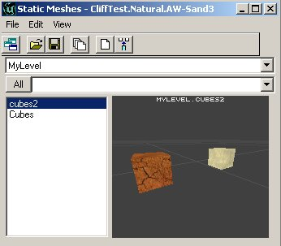
また、普通のメッシュまたはその他の StaticMeshを一つの新しいStaticMeshに変換できます。 ブラシをStaticMeshに変換する場合、[Unlit] （アンリット）および [Special Lit] （スペシャル リット）などのいくつかのサーフェスの設定が機能しなくなります。しかし依然として、表示プロパティを使って完全なStaticMeshをアンリットにセットできます。
ブラシをStaticMeshに変換する場合、[Unlit] （アンリット）および [Special Lit] （スペシャル リット）などのいくつかのサーフェスの設定が機能しなくなります。しかし依然として、表示プロパティを使って完全なStaticMeshをアンリットにセットできます。
StaticMeshをブラシに変換する
StaticMeshをブラシに変換することもできます。 Static Meshの上で右クリックして、[Convert] （変換）を展開して、[To Brush] （ブラシへ）を選択します。 レベルの BSP アーキテクチャに追加する目的のあるブラシにStaticMeshを変換することは、決してお勧めしないことを覚えておいてください。BSP ホール、ライティング（BSP ポリゴンが平らに削られ、StaticMeshのようにスムーズに陰影を付けることができません）、および衝突の問題が生じる外に、主要な性能の低下を引き起こし易くなります。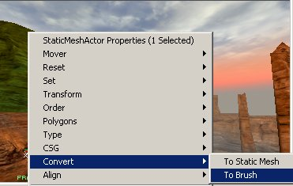
ここで赤いブラシは、StaticMeshと同じ形になります。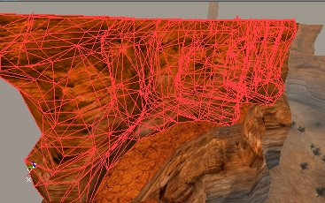
たいていの場合、StaticMeshの何らかのサーフェスのテクスチャを変更するために、StaticMeshをブラシに変換します。StaticMesh上で直接にサ-フェスのテクスチャを編集することはできません（今後、可能になることを期待しましょう）。空の空間にブラシを加算し、テクスチャを編集し、次に、ブラシを新しいStaticMeshに変換し戻すか、または、古いStaticMeshを上書きできます。古いStaticMesh（同じ名前の同じパッケージに入れます）を上書きする場合、マップにあるStaticMeshはすべて、自動的に更新されます。 基本的に、どのような種類のブラシでも、その他のどのような種類のブラシにでも変換できます。下のスクリーンショットの左から右へ順番に、正のブラシ、StaticMesh、赤いビルダー ブラシ、骨格メッシュ、および負のブラシです。
StaticMeshを追加する
StaticMeshをマップに追加するには、[Static Mesh] （StaticMesh） ブラウザにある一つのStaticMeshを選択し、 2D または 3D ビューの一つで右クリックし、現れたメニューから、[Add Static Mesh: 'Package.Name'] （StaticMeshを追加する：'パッケージの名前'）を選択します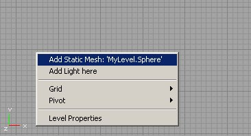
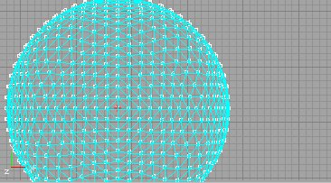
StaticMeshを追加した後は、その他のオブジェクトやブラシを回転させたり別の場所に移したりできるのと同じように、このStaticMeshを回転させたり別の場所に移したりできます。StaticMeshの頂点の一つをグリッドにスナップするためには、StaticMeshを選択したときに頂点の上に塗られた小さな白い四角形の上を右クリックするだけです（白い四角形がない場合は、[Show Large Vertices] （大きな頂点を表示する）ボタンを押してください）。StaticMeshの頂点の上にピボット ポイントを配置するためには、白い四角形の上を左クリックしてください。
（大きな頂点を表示する）ボタンを押してください）。StaticMeshの頂点の上にピボット ポイントを配置するためには、白い四角形の上を左クリックしてください。
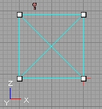
StaticMeshのプロパティ
StaticMeshの上を右クリックし、[StaticMeshActor Properties] （StaticMesh アクタ プロパティ）を選択すると、[StaticMeshActor Propertie] が現れます。[Display] （表示）を展開してください。 bShadowCast（シャドウ キャスト）: これが True （真）の場合は、StaticMeshがシャドウを投影し、False （偽）である場合は、投影しません。
bShadowCast（シャドウ キャスト）: これが True （真）の場合は、StaticMeshがシャドウを投影し、False （偽）である場合は、投影しません。
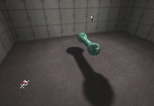
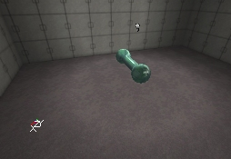
bUnlit（アンリット）: これが True （真）の場合は、StaticMeshはいつも明るく輝き、 False （偽）である場合は、LightActors （ライト アクタ）または ZoneLight （ゾーン ライト）から明かりを得る必要があります。
 DrawScale（ドロースケール）: StaticMeshを小さくしたり大きくしたりするために使用します。1 がデフォルトのサイズで、2 は、2倍のサイズになります。
DrawScale（ドロースケール）: StaticMeshを小さくしたり大きくしたりするために使用します。1 がデフォルトのサイズで、2 は、2倍のサイズになります。
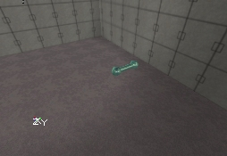
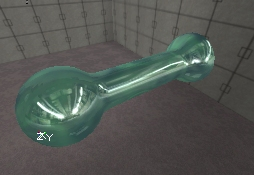
DrawScale3D（ドロー スケール 3D）: X,YまたはZ 軸にそって、独立して [DrawScale] （ドロースケール）を変更することができます。
 DrawType（ドロー タイプ）: この設定によって、このオブジェクトがStaticMeshになります。このオプションが、DT_StaticMeshに設定されると、StaticMeshで選択したStaticMesh スキンが使用されます。そうでない場合は、無視されます。この設定を DT_StaticMeshに設定することによって、どのようなオブジェクト、LightActors （ライト アクタ）や武器でさえもStaticMeshに変換できます。
Skins（スキン）: これは Skins Array （スキン アレイ、スキン配列）のことです。これによって、StaticMeshをインスタンスとして利用しながら、StaticMeshに割り当てられたテクスチャを上書きすることができます。[Texture Browser] （テクスチャ ブラウザ）から使用したいテクスチャを選択します。次に、StaticMesh上の適切なマテリアルを置換するために、スキンを必要なだけ多く追加します（スキン 0 は、マテリアル 0 を置換します。スキン 1 は、マテリアル 1を置換します。等。）。次に、テクスチャを置換するために、使用ボタンを押します。求めるテクスチャが、StaticMeshのインスタンスに割り当てられます。
DrawType（ドロー タイプ）: この設定によって、このオブジェクトがStaticMeshになります。このオプションが、DT_StaticMeshに設定されると、StaticMeshで選択したStaticMesh スキンが使用されます。そうでない場合は、無視されます。この設定を DT_StaticMeshに設定することによって、どのようなオブジェクト、LightActors （ライト アクタ）や武器でさえもStaticMeshに変換できます。
Skins（スキン）: これは Skins Array （スキン アレイ、スキン配列）のことです。これによって、StaticMeshをインスタンスとして利用しながら、StaticMeshに割り当てられたテクスチャを上書きすることができます。[Texture Browser] （テクスチャ ブラウザ）から使用したいテクスチャを選択します。次に、StaticMesh上の適切なマテリアルを置換するために、スキンを必要なだけ多く追加します（スキン 0 は、マテリアル 0 を置換します。スキン 1 は、マテリアル 1を置換します。等。）。次に、テクスチャを置換するために、使用ボタンを押します。求めるテクスチャが、StaticMeshのインスタンスに割り当てられます。
 StaticMesh: このオプションによって、このオブジェクトにどのようなStaticMesh スキンを使用するかが決まります。StaticMesh ブラウザの StaticMeshを選択して、[Use] （使用）ボタンを押して値を入力できます。
StaticMesh プロパティで、StaticMeshに光りを与えるために、外のオブジェクトでできるのと同じように、[LightColor] （ライト カラー）と [Lighting] （ライティング）を展開することもできます。ライティングを機能させるために、[LightBrightness] （ライト輝度）、[LightRadius] （ライト半径）および [LightType] （ライト タイプ）を設定する必要があります。また、[bShadowCast] （シャドウ キャスト）の値を False （偽）に設定します。そうしないと、StaticMeshが、ライティングに完全に陰影を与えることになり、ライティングの効果がなくなります。
StaticMesh: このオプションによって、このオブジェクトにどのようなStaticMesh スキンを使用するかが決まります。StaticMesh ブラウザの StaticMeshを選択して、[Use] （使用）ボタンを押して値を入力できます。
StaticMesh プロパティで、StaticMeshに光りを与えるために、外のオブジェクトでできるのと同じように、[LightColor] （ライト カラー）と [Lighting] （ライティング）を展開することもできます。ライティングを機能させるために、[LightBrightness] （ライト輝度）、[LightRadius] （ライト半径）および [LightType] （ライト タイプ）を設定する必要があります。また、[bShadowCast] （シャドウ キャスト）の値を False （偽）に設定します。そうしないと、StaticMeshが、ライティングに完全に陰影を与えることになり、ライティングの効果がなくなります。
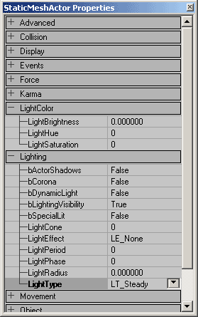
 StaticMeshに独自の AmbientSound （環境音）を与えることもできます。プロパティにある [Sound] （サウンド）を展開し、Soundブラウザで一つのサウンドを選択し、[AmbientSound]フィールドの [Use] （使用）ボタンを押します。また、サウンドに、音の高さ、音域および音量を与えることもできます。
StaticMeshに独自の AmbientSound （環境音）を与えることもできます。プロパティにある [Sound] （サウンド）を展開し、Soundブラウザで一つのサウンドを選択し、[AmbientSound]フィールドの [Use] （使用）ボタンを押します。また、サウンドに、音の高さ、音域および音量を与えることもできます。